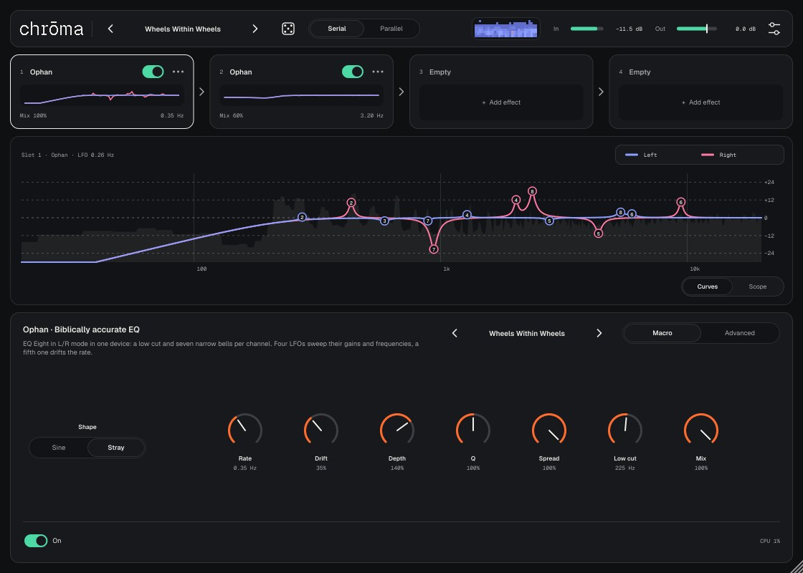
chrōma — rack с экспериментальными эффектами обработки. Приёмы, которые в DAW собирают из нескольких устройств и десятка маппингов, здесь собраны в один эффект.
Нужен Mac с macOS 11 или новее. Плагин не подписан сертификатом Apple, поэтому ставится скриптом, который снимает карантин.
Нужен установленный gh (GitHub CLI). Команда скачивает последний релиз, распаковывает и устанавливает:
cd ~/Downloads && rm -rf chroma-macOS chroma-macOS.zip && gh release download -R controloptioncommand/chroma-vst -p chroma-macOS.zip && unzip -q chroma-macOS.zip -d chroma-macOS && bash chroma-macOS/install-mac.sh
bash ~/Downloads/chroma-macOS/install-mac.sh. Скрипт кладёт chroma.vst3 и chroma.component в ~/Library/Audio/Plug-Ins.В архиве есть папка demo: сухой сигнал и он же через пресеты. Обновление — та же команда: новая версия заменит старую, проекты и пресеты не трогаются.
| Зона | Что там |
|---|---|
| Тулбар | Логотип (клик — страница About), пресет ‹ имя ›, кубик, режим Serial / Parallel, мини-спектрограмма, уровни In и Out, настройки. |
| Rack | Слоты цепочки: 4 места, с четырьмя эффектами — 8 (прокруткой). Выбранный слот обведён. |
| Главный вид | Curves (Ophan) или Stack (OTT Stack) — что делает выбранный слот, поверх спектра; Scope — волна на выходе. |
| Панель | Ручки выбранного слота, пресет эффекта ‹ имя › (у Ophan — ещё вкладки Macro и Advanced). Внизу — On и CPU. |
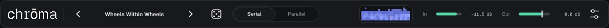
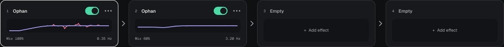
Пока эффектов меньше четырёх, в rack четыре места. Как только эффектов четыре, открываются все восемь. На экране помещаются четыре карточки, остальные — прокруткой: колесом мыши, трекпадом или круглыми стрелками по краям rack (клик — на четыре места). Перетаскивание к краю rack тоже прокручивает. Если снова оставить меньше четырёх эффектов на первых четырёх местах, rack вернётся к четырём.
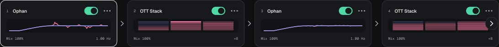
Сигнал проходит слоты слева направо. На карточке: номер места в цепочке, имя эффекта, переключатель On, меню ⋯, миниатюра кривых, Mix и скорость LFO.
| Действие | Как |
|---|---|
| Выбрать слот | Клик по карточке. Панель внизу и главный вид показывают выбранный слот. |
| Добавить эффект | Клик по пустой карточке — меню с эффектами, или кнопка эффекта в панели пустого слота. Сменить эффект — меню ⋯. |
| Включить / выключить | Переключатель на карточке или On в подвале панели. Выключенный слот пропускает звук без изменений. |
| Переставить | Перетащите карточку: оранжевая риска показывает, куда она встанет. Или меню ⋯ → Move left / Move right. |
| Дублировать | Меню ⋯ → Duplicate: копия со всеми ручками (у Ophan — и с Advanced) встаёт сразу за оригиналом (нужен свободный слот). |
| Очистить | Меню ⋯ → Clear slot. |
Переключатель в тулбаре. Serial (по умолчанию) — слоты обрабатывают звук по очереди, слева направо: каждый следующий получает выход предыдущего, порядок слышен. Parallel — каждый включённый слот получает один и тот же сухой вход, а выходы слотов усредняются. Между карточками вместо шевронов «›» стоят «+».
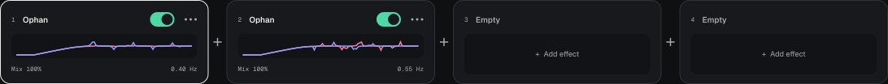
Tab до полосы слотов, затем ← → — выбор, ⌥← ⌥→ — переставить, пробел — On, Return — меню.
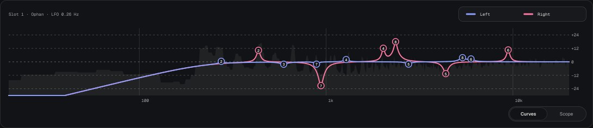
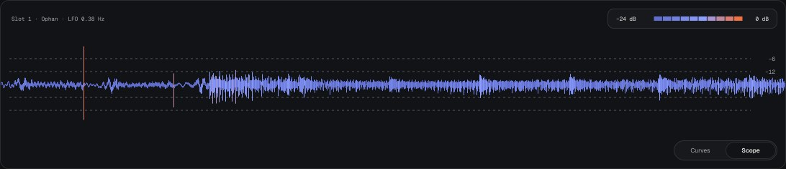
Вкладки — снизу справа; с клавиатуры: ← →, когда вид в фокусе.
Ophan повторяет Ableton-рецепт «Biblically accurate EQ» — тот, где EQ Eight в режиме L/R и пять LFO собраны в Audio Effect Rack.
| В Ableton | В Ophan |
|---|---|
| EQ Eight, режим L/R | Свой эквалайзер на каждый канал |
| Полоса 1 — срез низа (Q 0.71) | Low cut |
| Полосы 2–8 — колокола, Q 6–18, Adaptive Q | Семь колоколов, Q из видео, сужаются при большом усилении |
| Scale 200% | Depth 200% |
| LFO 1 и 2 → Gain левых и правых полос, 20↔80% через полосу | LFO усиления |
| LFO 3 и 4 → Freq левых и правых полос | LFO частоты |
| Все четыре — Stray, скорость на макро Rate | Shape, Rate |
| LFO 5 (Stray, ~0.35 Гц, Mod 30–40%) → макро Rate | Drift, Drift rate |
Четыре LFO независимы, поэтому колокола левого и правого канала оказываются в разных местах: звук «шевелится» и разъезжается по стерео. Через полосу усиление идёт в противофазе — пока одни колокола поднимаются, соседние вырезают.
Блуждающая волна: каждый полупериод своей длины (×0.55–1.55) и высоты (35–100%), полупериоды плавно сшиты. В отличие от синуса, движение не повторяется.
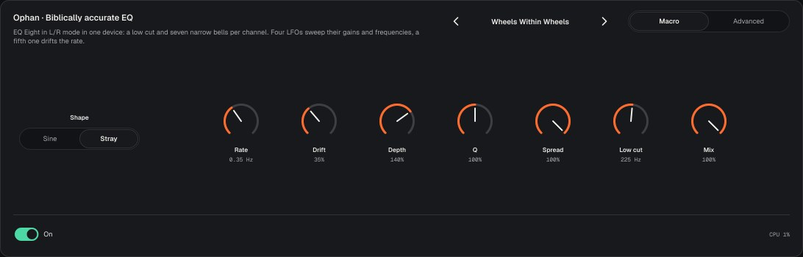
| Ручка | Диапазон | Что делает |
|---|---|---|
| Shape | Sine / Stray | Форма четырёх LFO. По умолчанию Stray, как в видео. |
| Rate | 0.02–12 Hz | Общая скорость четырёх LFO. По умолчанию 1 Hz. |
| Drift | 0–100% | Насколько пятый LFO плавает скоростью: 35% — примерно ±0.7 октавы, 100% — ±2 октавы. |
| Depth | 0–200% | Scale EQ Eight: множитель усиления всех полос. 200% — рецепт, 0 — колокола выключены. |
| Q | 25–400% | Множитель Q всех полос: меньше — шире и мягче, больше — тоньше и «свистящее». |
| Spread | 0–100% | 0 — правый канал повторяет левый (моно-совместимо), 100% — каналы независимы. |
| Low cut | 10 Hz – 2 kHz | Срез низа (полоса 1 EQ Eight), 12 dB/окт. По умолчанию 225 Hz. |
| Mix | 0–100% | Сухой / обработанный сигнал слота. 0 — звук без изменений. |
| On | вкл / выкл | В подвале панели и на карточке. |
Двойной клик по ручке — значение по умолчанию.
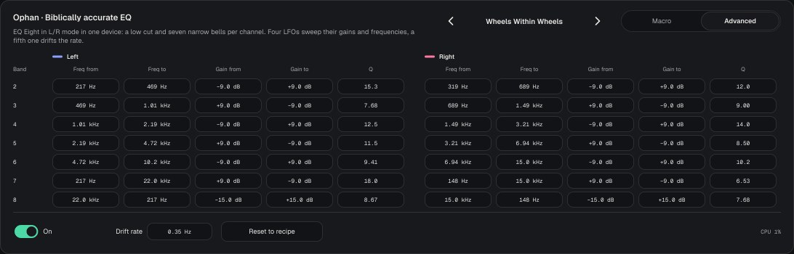
Для каждой из семи полос (номера как в EQ Eight, 2–8) и каждого канала:
Число тянут мышью вверх / вниз, с Shift — точнее. Двойной клик — значение рецепта. С клавиатуры: ↑ ↓, Backspace — значение рецепта.
Приём «поставить OTT на OTT» одним эффектом: от 2 до 40 OTT подряд, главная ручка — их количество.
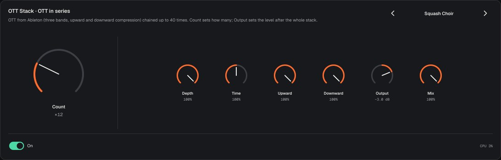
Как пресет OTT устройства Multiband Dynamics в Ableton: три полосы (кроссоверы 88.3 Hz и 2.5 kHz), в каждой — сжатие вниз выше верхнего порога (1:66.7) и вверх ниже нижнего (4.17:1), затем подъём полосы (+10.3 / +5.7 / +10.3 dB). Атака и восстановление — 47.8 / 22.4 / 13.5 ms и 282 / 282 / 132 ms по полосам. Каналы сжимаются вместе.
| Ручка | Диапазон | Что делает |
|---|---|---|
| Count | ×2 … ×40 | Главная: сколько OTT подряд. По умолчанию ×8. Меняется плавно — новые OTT въезжают по одному. |
| Depth | 0–100% | Параллельная смесь каждого OTT, как Depth у Xfer OTT. 0 — стопка ничего не делает. |
| Time | 10–1000% | Множитель атаки и восстановления. Меньше — быстрее и «злее», больше — плавнее. |
| Upward | 0–100% | Сколько поднимать тихое. |
| Downward | 0–100% | Сколько сжимать громкое. |
| Output | −48…+12 dB | Громкость после всей стопки. По умолчанию −3 dB. |
| Mix | 0–100% | Сухой / обработанный сигнал слота. |
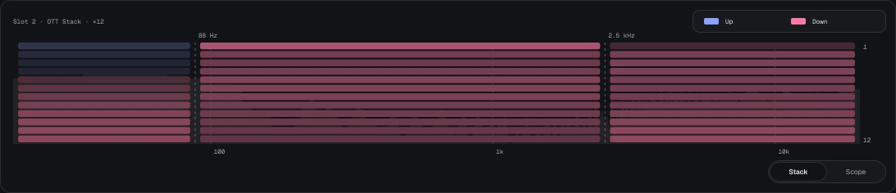
| Пресет | Что это |
|---|---|
| Biblically Accurate | Рецепт из видео один в один. |
| Twerking | Быстрее и с большим Drift. |
| Gentle Halo | Медленно, мягко, Mix 70%. |
| Sine Choir | Синусы без Drift: ровное, предсказуемое движение. |
| Mono Prayer | Spread 0 — каналы одинаковые. |
| Glossolalia | Быстро и узко: «говорящий» фильтр. |
| Thin Air | Высокий срез низа, медленное движение. |
| Wheels Within Wheels | Два Ophan: медленный и быстрый поверх. |
| Six Wings | Два Ophan: широкий и очень узкий. |
| Be Not Afraid | Всё на максимум. |
| Double OTT | OTT ×2 — классика. |
| Tower of Babel | OTT ×40. |
| Gentle Glue | OTT ×4, Depth 40%, Mix 70% — мягко склеивает. |
| Squash Choir | Ophan → OTT ×12: стопка вытягивает колокола. |
| Angel Crush | OTT ×24 → Ophan. |
| Ophanim | Parallel: два Ophan на одном входе, Stray и Sine, — их колокола расходятся и сходятся. |
У каждого эффекта — свои пресеты, отдельно от пресетов rack. Они в заголовке панели слота: ‹ имя ›. Стрелки листают, клик по имени — список, Save effect preset… и Show effect presets folder.
~/Music/chroma/Presets/Effects/Ophan и …/OTT Stack (*.chromafx). Пресет одного эффекта в другой не загрузить.Пресет хранит весь rack: типы и ручки слотов, порядок, режим Serial / Parallel и Advanced. Громкость Out пресет не меняет. Свои пресеты — меню пресета → Save preset…, лежат в ~/Music/chroma/Presets/*.chroma.
Кнопка с кубиком в тулбаре случайно выставляет ручки эффектов, которые уже стоят в rack. Диапазоны «безопасные»: тишины и перегруза не будет.
Что кубику можно менять — настройки → Randomizer, галочки по пунктам выше. Выбор хранится в настройках плагина и действует во всех проектах. Кубик никогда не трогает тип эффекта, пустые слоты, On, режим Serial / Parallel, громкость Out и Output у OTT Stack. Автоматизация хоста видит изменения как обычные движения ручек.
Настройки → Credits — отдельная страница: кто вдохновил эффекты. @rosco.moon — Ophan, Ableton — OTT Stack. Назад — маленький логотип или Escape.
Oxygen — светлая, Rubber — тёмная или по системе: настройки → Appearance.
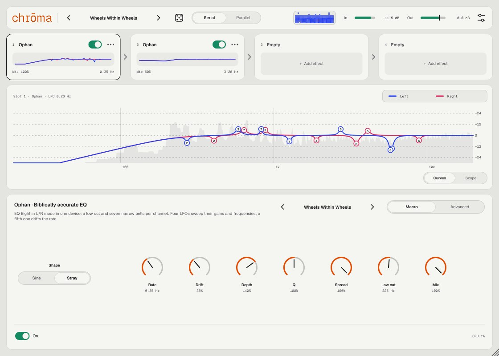
Biblically Accurate, Rate 0.3–0.5 Hz, Depth 120%, Mix 60–80%. Колокола медленно проплывают по гармоникам аккорда.
Low cut 500–800 Hz, Q 150%, Rate 2–4 Hz, Spread 100%. Добавьте второй слот с Rate 0.2 Hz и Mix 40%.
Spread 0: эффект двигается одинаково в обоих каналах и не пропадает при сведении в моно.
OTT Stack после Ophan (пресет Squash Choir) вытягивает каждый колокол до громкости остального — эффект становится резче. До Ophan (Angel Crush) — Ophan режет уже сплющенный звук. Порядок — перетаскиванием карточек.
Пресет Ophanim или два Ophan в Parallel с разными Rate (0.4 и 0.55 Hz) и разной Shape. Колокола двух веток то совпадают, то расходятся — получается медленное фазовое движение, которого нет в Serial.
Во вкладке Advanced сузьте все Freq from / to к одной октаве (например, 800 Hz – 1.6 kHz) — колокола будут «роиться» в одной зоне, как формантный фильтр.
При Depth 200% узкие колокола поднимают отдельные гармоники до +18 dB (полоса 8 — до +30 dB), а срез низа убирает басы. Подровняйте Out или уменьшите Depth. Выше 0 dBFS выход не поднимется.
Уменьшите Q (ручку) или Depth: узкий подъём на +18 dB на гармонике звучит как свист — это часть характера рецепта.
Каналы обрабатываются по-разному. Сведите Spread ближе к 0.
Нет: фильтры работают без задержки, хосту ничего компенсировать не нужно.
40 OTT подряд — около 12% одного ядра (каждый OTT — 7 фильтров на канал). Нужна лёгкость — уменьшите Count.
Выходы слотов усредняются: при двух слотах каждый звучит наполовину. Нужен один эффект сильнее — выключите остальные или верните Serial.
chrōma задумана как rack, эффекты будут добавляться в следующих версиях. Слоты и пресеты из v1 останутся рабочими.